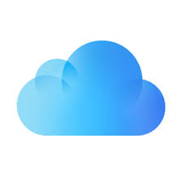

YUFAN ZHAO
What Do I use To Take Notes?
notebook
Calender
Reminder
What Do I Use To Archive Digital Photos?

I use icloud to archive my digital images because it is easy to access as long as I remember my Apple ID and password.
The Way I Organize Digitally
The Way I Organize Physically
External Servies I Use to Stay Organized
Google Drive
Google Doc
The Newschool Web